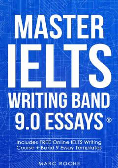

MIIELTS Writing imtihonidan yuqori ball olish uchun amaliy qo'llanma.
Ushbu kitob IELTS imtihonining Writing qismi uchun tayyorgarlik ko'rishga mo'ljallangan bo'lib, eng yuqori 9.0 ballni qo'lga kiritish sirlarini ochib beradi. Unda esse yozish texnikalari, shablonlar, jumla tuzilmalari va keng tarqalgan xatolarning tahlili keltirilgan. Akademik va umumiy yo'nalishdagi topshiriqlarni bajarish uchun amaliy tavsiyalar berilgan.